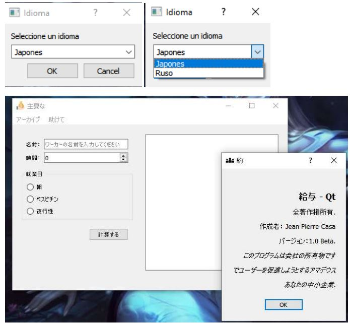

–Servicios de conectividad y realizacion de topología para una area de construcción que cumpla con los requirimientos del cliente.
–Desarrollo de un programa que permita mostrar las peliculas en cartelera y comprar boletos, hacer reservaciones de ascientos, mostrar factura.
–Configuracion de los siguientes proyectos.
–Desarrollo de un sistema de apertura de puertas utilizando el uP 8086, se debe ingresar un código de 5 dígitos por medio de un teclado 4x4 para la comparación cuyo código original debe estar en una memoria EPROM,si el resultado de la comparación es positivo, entonces enviara un uno lógico hacia un relé q abrirá su contacto durante 500 ms, caso contrario,se encenderá un led rojo como prueba de error, también, si se contabilizare 3 intentos fallidos, entonces se bloqueara todo el sistema.
–TEXTO LIBRE
Esta practica me parecio genial, ya que es un programa que puede calcular las equivalencias de las temperaturas Centígrados, Fahrenheit, Kelvin utilizando widgets.Link para verlo
Utilizando los siguenetes objetos:
Desarrollo un programa que permite calcular el salrio de un empleado, contiene internalización. Link para verlo
–TEXTO LIBRE